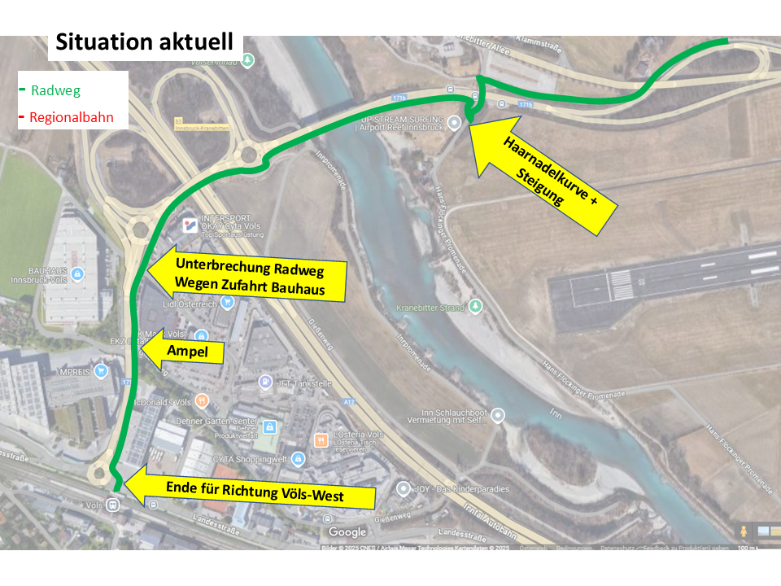
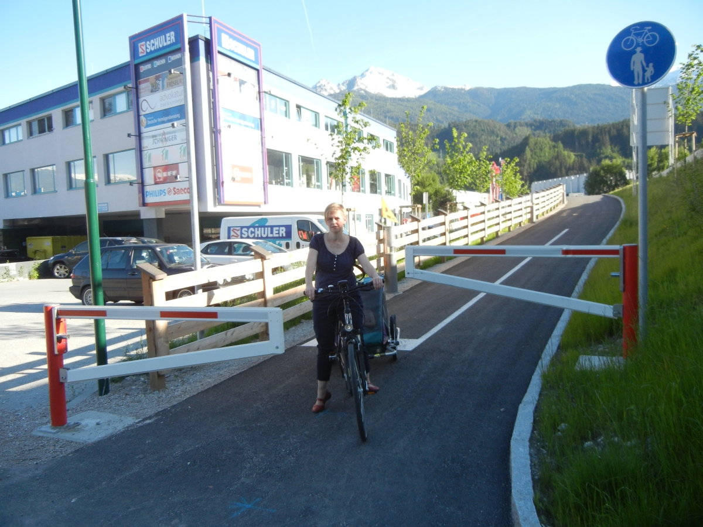
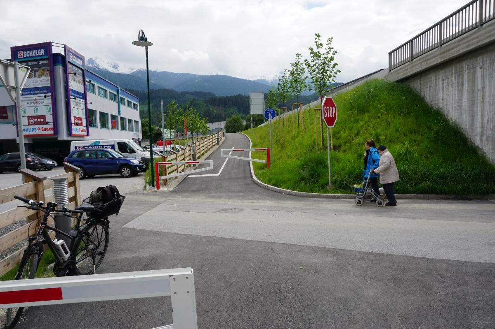
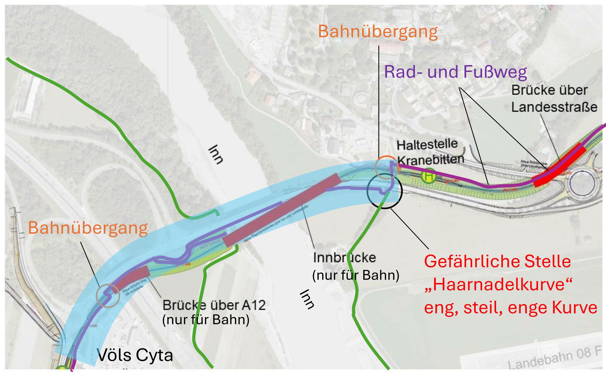
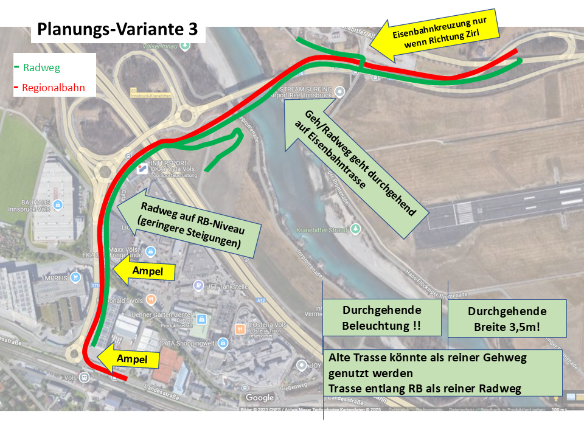
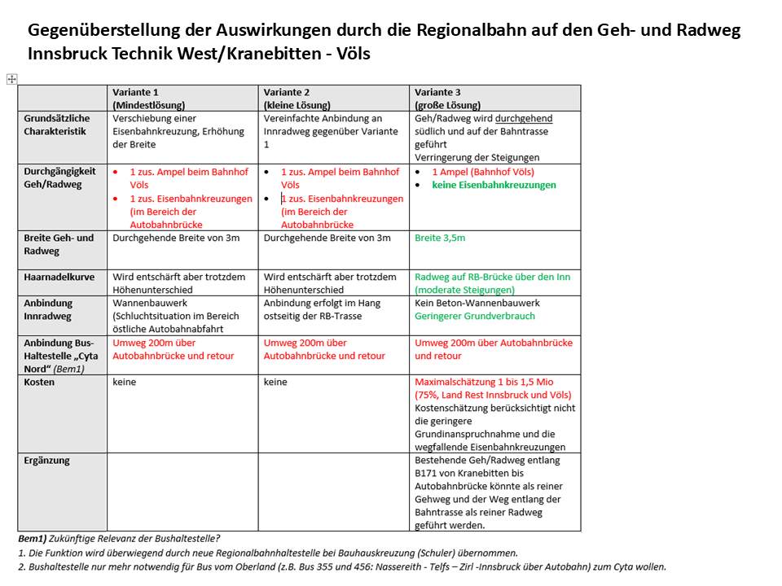

Schwerpunkt — laufend
Geh- und Radweg: Völs - Innsbruck Kranebitten/Technik
Verbesserungsbedarf und aktuelle Situation
- Hauptstrecke
- Völs ↔ Kranbitten/Technik
- Verkehrsaufkommen
- Hoch
- Gefährliche Kreuzungen
- 2
- Unzumutbare Steigungen
- 3
- Gefährliche Kurven
- 1
Bedeutung
Der Weg zwischen Völs und Innsbruck Kranebitten/Technik ist ein vielbefahrener Radweg. Er bindet die die westlichen Stadtteile von Innsbruck an:
- den Bahnknotenpunkt Völs
- Völs EKZ Cyta
- Völser Siedlungsgebiete südlich der Bahn
- Inntalradweg
Künftig ist eine weiter steigende Bedeutung durch geplanten neuen Stadtteil „Harterhof-Siedlung“ (zusätzlich ca. 1500 Wohnungen und ca. 700 Arbeitsplätze) zu erwarten. Derzeit ist die Strecke zwischen Bahnhof Völs und Innsbruck Technik ca. 2,5km lang (10min mit Fahrrad).
Verbesserungsbedarf und aktuelle Situation
Gerade auf dieser Strecke können einige Punkte für Radfahrer*innen verbessert werden:

Entschärfung "Haarnadelkurve"
Bei der Überführung über die Bundesstraße auf Höhe von Kranebitten runter auf den Radweg auf der Brücke über den Inn gibt es eine "Haarnadelkurve". Aktuell ist hier enge, scharfe und uneinsichtige Kurve mit starker Steigung bzw. Spitzkehre zu bewältigen. Diese muss unbedingt entschärft werden.
Lückenschluss Beleuchtung
Zwischen dem Abschnitt "Haarnadelkurve" bis zur Innbrücke fehlt die Beleuchtung.
Entschärfung Kreuzungsbereich
Zufahrt Bauhaus-Unterführung

- aktuell: gefährlicher Kreuzungsbereich mit schlechter Sicht für Rad und Auto
- vor allem von Bauhaus kommend und Nachrang für Radfahrer starke Steigungen
Verbesserung Verknüpfung mit anderen Verkehrsmitteln
Bahnhof Völs:
- Schaffung ausreichender Abstellplätze - auch auf der Nordseite
- Schaffung IVB-Stadtrad-Stationen bei Bahnhof Völs und Cyta
Direkte Anbindung Völs Seesiedlung
Radunterführung Bahnhof

Planungsstand
2023 wurden vom Land Tirol die Brücken für die Regionalbahn präsentiert. Dabei waren zwei beschrankte Bahnübergänge eingeplant.

Wie wird der Radverkehr in der blau markierten Fläche geführt?

- Warum sind die Brücken über Inn und Autobahn ohne Radweg geplant?
- Bleibt die gefährliche „Haarnadelkurve“?
- Sind tatsächlich Eisenbahnkreuzungen Regiobahn / Rad-und Fußweg geplant?
- Wird die Lücke der Beleuchtung des Rad-/Fußwegs über die Innbrücke geschlossen?
Planungsvarianten
Nach Eingabe unserer Fragen haben wir im Mai 2025 folgende Planungsvarianten erhalten. Einzug die Variante 3 kommt ohne beschrankten Bahnübergang auf der Hauptverbindung aus und bietet eine durchgängige Beleuchtung!
Variante 1+2
- (-) mit beschrankten Bahnübergang (ca. alle 7 min geschlossen)
- (-) ohne durchgängiger Beleuchtung
Variante 3
- (+) ohne beschrankten Bahnübergang
- (+) mit durchgängiger Beleuchtung

Unterschiede der Varianten im Überblick:
